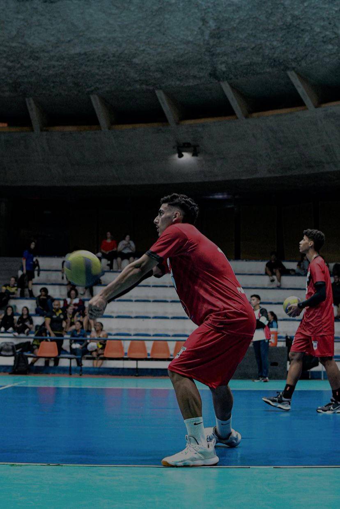
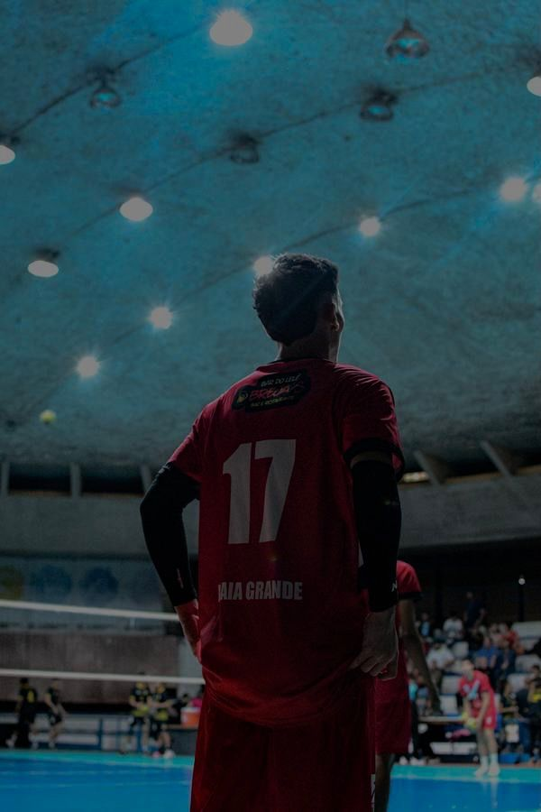
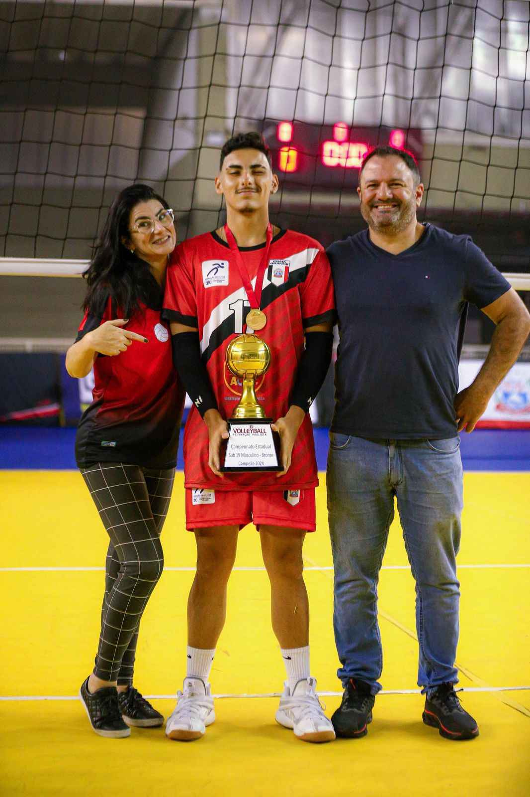
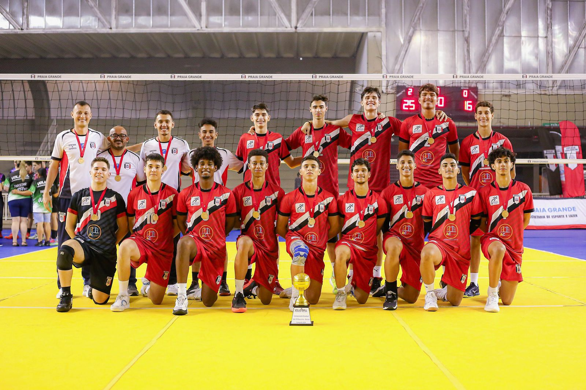

🏐 O Começo de tudo
Comecei no voleibol na escola, como uma atividade extra-curricular (com 13 anos), pratiquei durante aproximadamente 1 ano, minha técnica era esposa do técnico responsável pela equipe de São Bernardo Do Campo, que estava abrindo uma nova categoria para disputar federação paulista e conforme o tempo passava, eu me dedicava mais nos treinos diários, até que veio a oportunidade através da minha técnica, me lembro da nossa conversa até hoje : "Tenho uma proposta pra você, é uma oportunidade de viver isso de forma mais profissional, já ouviu falar sobre a FPV ? (Federação Paulista De Voleibol)", eu não tinha ideia, mas fiquei entusiasmado com a ideia. No dia da seletiva, eu passei com mais algumas pessoas (categoria sub15), desde aquele dia, me comprometi a entregar tudo que era possível da minha parte e me dedicar para dar orgulho aos meus pais, que sempre fizeram jus por mim.
Evolução
Esses 2 anos na categoria não foram positivos no quesito resultado (troféus), porém eu senti que estava preparado para novos ares e tinha trabalhado para aquilo.
No fim de 2023, participei da seletiva do time de Praia Grande, fui sabendo das responsabilidades que viriam pela frente, como ficar longe de familiares, amigos,
relacionamentos, abrir tudo em pról de um desejo em ascensão, ao fim da seletiva, fui aprovado na categoria sub17, onde me foi prometido uma série de benefícios :
- Bolsa Escolar;
- Auxílio de custo;
- Vale Transporte;
- Bônus por campeonato;|
Fiquei extremamente animado com o projeto que o time apresentava, e continuei me dedicando para me destacar.
Mentalidade
Durante o começo de 2024, tivemos muitos treinos, cargas excessivas, comparações em questão de altura, performance, entre outros, mas segui fazendo meu progresso diariamente, seguindo a filosofia de David Goggins, lei dos 40%.
Desafios
No ano seguinte, segui trabalhando quieto, com muitas dores, inseguranças e desejo de ser melhor a cada dia, porém vinha um pensamento ao fim do dia, que talvez seria melhor abrir mão dessa rotina e essa vida para focar nos estudos. Me lembro de ir para a academia diariamente com a menor das vontades, naquele momento, entendi que havia conquistado a disciplina. Acabou ocorrendo a mesma coisa dos anos retrasados, ficava na reserva durante os jogos e mal era utilizado pelo meu treinador, quando chegava para conversar com ele e perguntar o que poderia ser melhor, ele me respondia friamente a mesma coisa "Melhore", aquilo ecoava na minha cabeça durante meses, mas eu seguia trabalhando duro para melhorar e contrariar a opinião dele.
Oportunidade
No começo do ano, mudaram a localização do ginásio que nós treinávamos (um bem maior, com muito espaço e uma administração que não era chata), com isso, me prometi que chegaria 1h30 antes de todos, para começar a treinar fundamentos, a rotina se tornou ainda mais cansativa, saia da escola, ja ia direto para casa almoçar, 30 minutos de descanso para a comida descer, logo em seguida academia, pré-treino no ginásio, treino com todos e, depois de tudo isso, poderia descansar e me recuperar para o dia seguinte, foi assim por 5 meses, até que em um dia aleatório, eu recebi uma mensagem do técnico do sub19, um agradecimento ao homem que me acolheu e viu real potencial em mim, Ricardo Vasconcellos e Bruno Ledo, me lembro de chegar a tremer, por conta que o contato com eles era mínimo, pensei que havia alguma irregularidade, até que li a mensagem, simplesmente uma convocação para um jogo do sub19 no sábado, contra a equipe de Campinas(Vôlei Renata), uma das equipes mais fortes do campeonato, mas como assim ? o cara que mal era aproveitado no sub17, indo jogar com a categoria acima ? Começaram os rumores, suposições, tudo que se podia imaginar, quando estávamos indo para o ginásio adversário, eu perguntei aos técnicos o porquê da escolha, e a resposta foi simples, sincera e clara "Observamos que você está sempre em treinamento constante, mas não tem a recompensa devida, por isso, decidimos te dar essa oportunidade, agora cabe a você nos mostrar o porquê você está aqui.", me senti extremamente feliz, porém ainda tinha um dever pela frente.
Conquistas
Em setembro de 2024, chegou o campeonato COPA TV TRIBUNA (nascente da Globo, no litoral paulista), onde escolas de toda baixada santista participavam, e
tinha um peso muito grande para a escola vencedora, a atual campeã era a escola do meu técnico do sub17, que me deixava de lado nos jogos, me senti na obrigação de me
vingar. O chaveamento foi ficando estreito,
e pegamos a escola dele na semifinal, um jogo pegado, muitos bons atletas contra e um desafio a ser enfrentado, mas para quem foi desafiado por 2 anos, aquilo era o jogo da vida.
Ao fim do jogo, ganhamos de 3x1 e eu fui o maior pontuador da partida,
com 23 pontos e concedi uma entrevista aos jornalistas locais pela vitória sobre o atual campeão.
Depois de muito esforço e dedicação, fomos campeões da COPA TV TRIBUNA 2024.
A euforia pela vitória era grande, mas eu não podia ficar nessa por muito tempo,
porque ainda tinha compromisso pelos campeonato paulista sub17 e sub19,
Tivemos muitos jogos importantes ao longo desse tempo, até chegarmos na final,
contra São Bernardo Do Campo, minha primeira e antiga equipe, naquele momento,
também me vi obrigado a mostrar que meu técnico antigo estava equivocado, e o melhor,
todos os que duvidaram de mim estavam lá também presentes, para assistir ao jogo.
Eu comecei como titular, o que já era um fator diferencial, e joguei o jogo inteiro, ao fim,
FOMOS CAMPEÕES PAULISTAS SUB19 de 2024.
Naquele momento, eu me senti extremamente realizado,
pude provar a todos os que desacreditaram de mim e do meu potencial como atleta, mostrar a minha disciplina,
ser efetivo e poder contribuir para o meu time e a minha escola.
Ao fim daquele ano, eu recebi uma bolsa escolar de 100%,
o que particularmente foi uma conquista especial, porque senti que dei orgulho aos meus pais, e os impedi de gastar uma boa quantia em dinheiro, por 1 ano.
Não havia sensação melhor, consegui tudo que almejei,
fui reconhecido pelo meu esforço, e aprendi a lidar com as dificuldades da melhor maneira possível.
(COPA TV TRIBUNA + CAMPEÃO PAULISTA SUB19 + 3ºLUGAR CAMPEONATO PAULISTA SUB17)
Desafios Enfrentados
- Pressão;
- Comparação;
- Insegurança;
- Cansaço físico e mental;
Aprendizado
O voleibol me ensinou disciplina, trabalho em equipe e persistência, valores que levo não só para o esporte, mas para a vida inteira.
Acredite em você mesmo! 🫵
Registros de jogos




🏆 Destaques
🥇 Campeão Paulista Sub19 2024
🥇 Campeão Copa TV Tribuna 2024
🥉 3º lugar Camp Paulista Sub17 2024